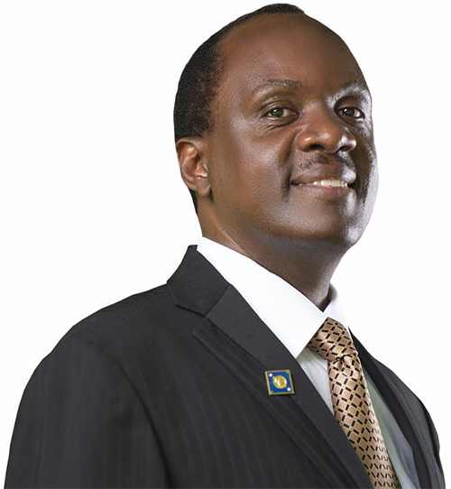

Where I Am Today
Simba Group is now a conglomerate
of East African companies spanning telecommunications,
Hospitality, Real Estate, Energy, Agriculture, Oil & Gas,
and the most recent Healthcare products. He is also the Honorary
consul, of the Australian Consulate in Uganda.
I serve as the Chairman board of directors Umeme
Uganda Ltd, the country’s main energy distributor as well
as Chairman Uganda Tourism Board Steering Committee. He also
previously served as Chairman of the Board of Directors for Uganda
Investment Authority (UIA), Private Sector Foundation (PSFU), Uganda
Reinsurance, Ndege Premier Aviation Company, Traidlinks Limited and The Presidential Investment Round Table.
‘Inspired by Bitature’ book launch set for Protea
Simba Telecom Starts Money Transfer Service In Uganda